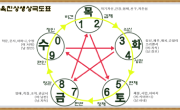

#새로등록된용한집

용한집이 알려주는 꿀팁
용한집 에디터가 발품팔아 얻은 꿀팁을 만나보세요!
과거 현자들의 지식과 폭넓은 경험을 바탕으로 현대인에 맞는 통합적 상담 필요
수십 년 간 사주를 보는 학식 높은 철학자들은 같은 사주도 부모 사주의 영향을 받아 달라진다는 천차만별의 변수에 따른 딜레마를 꾸준한 학문으로 극복한다고 하는데, 자운영 원장 또한 관상만 해도 2대 상전에 속하는 마의상법, 상리형전을 비롯한 많은 저서들을 연구하고 있으며 남의 사주를 잘 보려면 ‘명·상·복’으로 불리는 3가지 요소를 제대로 해야 한다고 강조한다. 그래서 자운영 원장은 명리(命理)혹은 사주(四柱), 관상(觀相), 그리고 사주명리학의 교본이자 오행십간을 보는 적천수(適天髓)와 함께 육효점학의 기본인 복서정종(卜筮正宗) 등을 깊이 있게 연구하고 있다. 또한 작명은 운명을 절대적으로 결정하기보다는 보완을 하는 쪽이며, 살면서 평생 불리는 동안 좋은 기운을 전해주는 글자의 조합이 이상적이라고 한다. 기운이 겨울에 몰리면 봄과 여름을 더해주는 개명이나 이름을 긍정적으로 바꾸어 ‘바이오리듬’처럼 사람의 에너지를 개선하는 방법도 좋다. 이렇게 현대인의 정서에 맞춤식 조언을 하는 자운영 원장은 종교를 초월해 관상과 사주를 문의하는 분들에게, 앞으로 한 번의 인연도 소중히 여기며 스스로도 보람되게 느낄 상담에 더욱 최선을 다하겠다고 전했다.
과거 현자들의 지식과 폭넓은 경험을 바탕으로 현대인에 맞는 통합적 상담 필요
수십 년 간 사주를 보는 학식 높은 철학자들은 같은 사주도 부모 사주의 영향을 받아 달라진다는 천차만별의 변수에 따른 딜레마를 꾸준한 학문으로 극복한다고 하는데, 자운영 원장 또한 관상만 해도 2대 상전에 속하는 마의상법, 상리형전을 비롯한 많은 저서들을 연구하고 있으며 남의 사주를 잘 보려면 ‘명·상·복’으로 불리는 3가지 요소를 제대로 해야 한다고 강조한다. 그래서 자운영 원장은 명리(命理)혹은 사주(四柱), 관상(觀相), 그리고 사주명리학의 교본이자 오행십간을 보는 적천수(適天髓)와 함께 육효점학의 기본인 복서정종(卜筮正宗) 등을 깊이 있게 연구하고 있다. 또한 작명은 운명을 절대적으로 결정하기보다는 보완을 하는 쪽이며, 살면서 평생 불리는 동안 좋은 기운을 전해주는 글자의 조합이 이상적이라고 한다. 기운이 겨울에 몰리면 봄과 여름을 더해주는 개명이나 이름을 긍정적으로 바꾸어 ‘바이오리듬’처럼 사람의 에너지를 개선하는 방법도 좋다. 이렇게 현대인의 정서에 맞춤식 조언을 하는 자운영 원장은 종교를 초월해 관상과 사주를 문의하는 분들에게, 앞으로 한 번의 인연도 소중히 여기며 스스로도 보람되게 느낄 상담에 더욱 최선을 다하겠다고 전했다.

과거 현자들의 지식과 폭넓은 경험을 바탕으로 현대인에 맞는 통합적 상담 필요
수십 년 간 사주를 보는 학식 높은 철학자들은 같은 사주도 부모 사주의 영향을 받아 달라진다는 천차만별의 변수에 따른 딜레마를 꾸준한 학문으로 극복한다고 하는데, 자운영 원장 또한 관상만 해도 2대 상전에 속하는 마의상법, 상리형전을 비롯한 많은 저서들을 연구하고 있으며 남의 사주를 잘 보려면 ‘명·상·복’으로 불리는 3가지 요소를 제대로 해야 한다고 강조한다. 그래서 자운영 원장은 명리(命理)혹은 사주(四柱), 관상(觀相), 그리고 사주명리학의 교본이자 오행십간을 보는 적천수(適天髓)와 함께 육효점학의 기본인 복서정종(卜筮正宗) 등을 깊이 있게 연구하고 있다. 또한 작명은 운명을 절대적으로 결정하기보다는 보완을 하는 쪽이며, 살면서 평생 불리는 동안 좋은 기운을 전해주는 글자의 조합이 이상적이라고 한다. 기운이 겨울에 몰리면 봄과 여름을 더해주는 개명이나 이름을 긍정적으로 바꾸어 ‘바이오리듬’처럼 사람의 에너지를 개선하는 방법도 좋다. 이렇게 현대인의 정서에 맞춤식 조언을 하는 자운영 원장은 종교를 초월해 관상과 사주를 문의하는 분들에게, 앞으로 한 번의 인연도 소중히 여기며 스스로도 보람되게 느낄 상담에 더욱 최선을 다하겠다고 전했다.